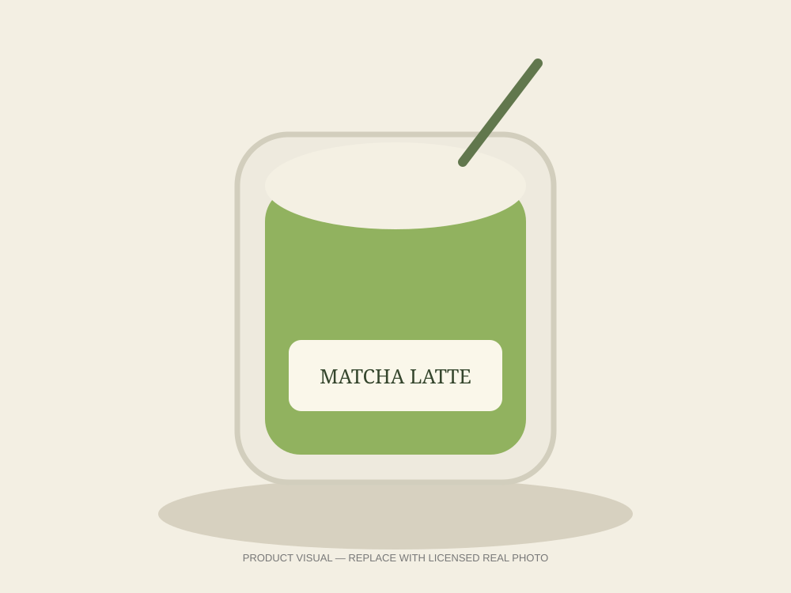
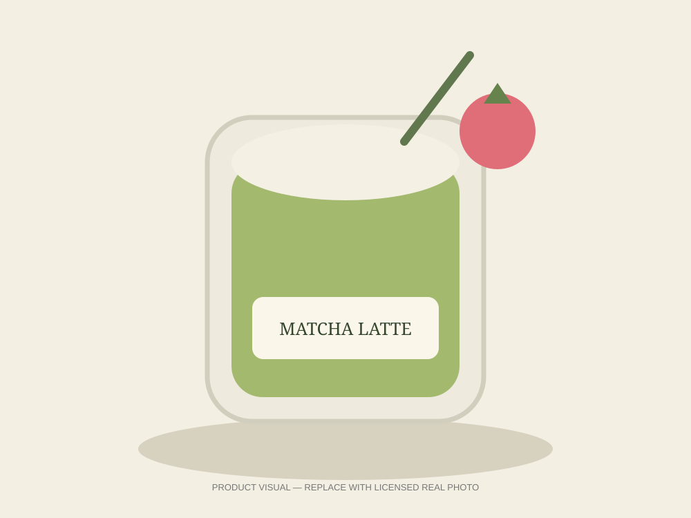
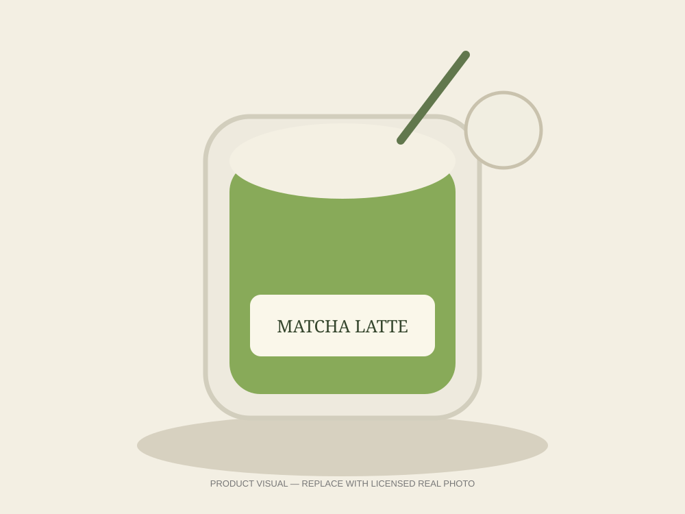
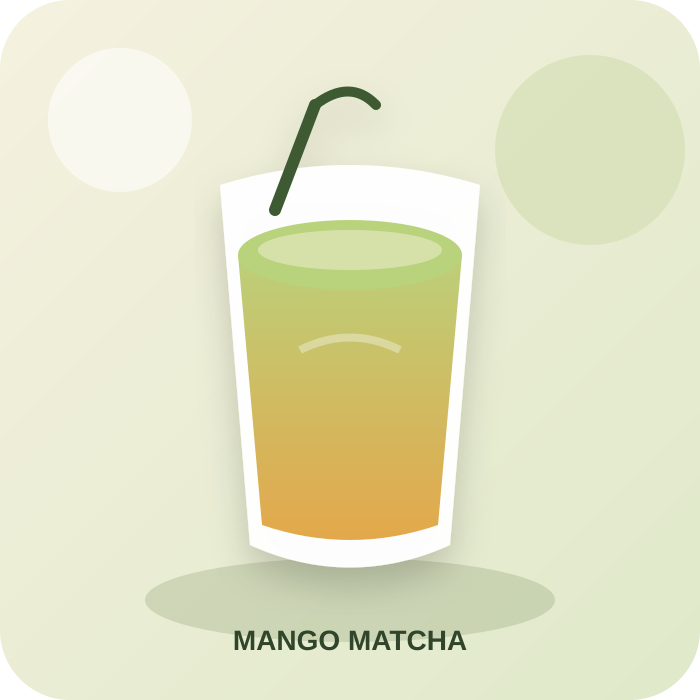

THE MATCHA RITUALNot just a drink.
Not just a drink.
It’s a little ritual.
Earthy matcha, silky milk and a gentle touch of sweetness. Every cup is made to give you a calm little moment in the middle of a busy day.
Whisked slowly, poured softly, made for the little pauses that make your day feel sweeter.
Explore the menu
madeEarthy matcha, silky milk and a gentle touch of sweetness. Every cup is made to give you a calm little moment in the middle of a busy day.

Bright berries, earthy green tea and a creamy finish. Sweet, soft and a little dreamy.

